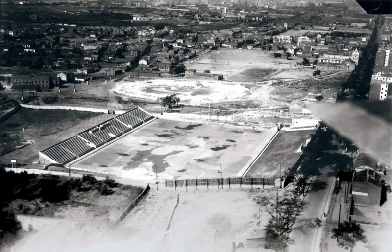

El 29 de mayo de 1924 se fundó la Agrupación Deportiva El Rayo, en el domicilio de Prudencia Priego, viuda de Huerta, siendo su primer presidente Julián Huerta Priego. El uniforme original del equipo fue camiseta y pantalón blanco con medias negras y vuelta blanca.
Desde 1931 hasta 1936 participó en el campeonato de la Federación Obrera de Fútbol. Se encuadró dentro de la Federación Castellana de Fútbol al terminar la Guerra Civil en 1939, adscripción que se tenía planeada antes de que estallara el conflicto bélico. En la temporada 1939/40 se reorganiza el club y se nombra presidente a Miguel Rodríguez Alzola.
En una junta realizada el 13 de noviembre de 1947 se acordó renombrar al club como Agrupación Deportiva Rayo Vallecano. Además, se acordó utilizar el escudo del Ayuntamiento de Vallecas.
En la temporada 1948/49 se logra el ascenso a Tercera División siendo presidente Miguel Rodríguez Alzola y entrenador Tomás Rodríguez Rubio. Dos años después se firma un acuerdo de ayuda mutua con la Asociación Deportiva Plus Ultra.
En la temporada 1949/50 se firma un "Acuerdo de Ayuda Mutua" con el Club Atlético de Madrid. Conforme al mismo, a cambio de cederle el Atleti algunos jugadores, pidió al Rayo que dejara de vestirse todo de blanco como el Real Madrid C. F. y añadiera algo rojo a su camiseta, lo que hace que se cambie el uniforme y se añada a la camiseta la franja diagonal que sigue hasta nuestros días, a semejanza de la del equipo argentino C. A. River Plate, con el cual tiene el Rayo una relación amistosa. Se llegó a pensar que, con este acuerdo, el Rayo se había convertido en un filial del equipo del Manzanares. El acuerdo sólo duró un año, pero la equipación ya nunca se cambiaría.
Como prueba de la admiración de los directivos rayistas hacia el River Plate, aprovechando que durante la pretemporada el River fue a jugar un partido con el Real Madrid al Santiago Bernabéu, dichos directivos se acercaron a la delegación argentina, obsequiándoles con una foto del plantel rayista autografiada por los jugadores. Los argentinos respondieron regalándole al Rayo dos juegos de camisetas y pantalones (se usaron en dos partidos oficiales, pero al ser tallas ajustadas, se usaron para las categorías inferiores).
En la temporada 1953/54 empiezan a disputarse ya en el Campo de Vallecas los partidos de Tercera División y algunos del Campeonato de Aficionados. Desde la primera temporada en Tercera División hasta esta temporada, los partidos del Rayo como local se disputan en el llamado Campo de Vallecas, Educación y Descanso. En este mismo estadio había jugado también sus encuentros el Atlético Aviación (el actual Atlético de Madrid) y, asimismo, disputaban sus encuentros varios equipos de Categoría Regional como Standard, Manufacturas Metálicas, etc. Igualmente los partidos del Campeonato de Aficionados, tanto en la fase madrileña, como en la castellana, como en la nacional, se disputaban en el "Rodival".
En las temporadas 53/54 y 54/55 se juegan los últimos partidos en el histórico 'Rodival' por reformas en el Estadio de Vallecas para ampliar su capacidad y rehabilitar sus instalaciones.
En 1955 se empieza a construir la Colonia Erillas en los terrenos que ocupaba el "Rodival", que ya sólo perdurará en la memoria de los rayistas.
En 1956 el Rayo Vallecano consigue su primer ascenso a Segunda División tras ganar en el Estadio Metropolitano al Gimnàstic de Tarragona por 5:3. Manolo Peñalva, histórico jugador y posteriormente técnico de la entidad franjirroja, fue el gran artífice de aquel ascenso al anotar tres de los cinco goles del equipo.
El 8 de diciembre de 1957 se inaugura el Estadio de Vallecas con un amistoso entre el Rayo Vallecano y el América de Belo Horizonte (Brasil), que ganó el partido por 0-1. En la temporada 1960/61 el equipo desciende a Tercera.
En la temporada 1964/65 se logra nuevamente el ascenso a Segunda División. Además, Santiago Bernabéu fue nombrado socio de honor y se le impuso la insignia de oro y brillantes del club.
El 15 de octubre de 1972 se juega el último partido en el Campo de Vallecas entre la A. D. Rayo Vallecano y el Barakaldo F. C., que terminó con empate a 2 goles. Cuatro días después se clausura definitivamente el estadio "porque está en ruinas y en peligrosas condiciones..." según palabras de Pedro Roiz, por aquel entonces presidente de la entidad. El domingo 5 de noviembre de 1972 se disputa el primer partido oficial en el Estadio de Vallehermoso, ganando al C.E. Sabadell por 3 goles a 0. Empezaba con este partido un exilio forzoso que duraría cuatro años, exactamente hasta el 6 de junio de 1976, cuando el Rayo disputó el último partido de la temporada 1975/76 contra el Real Valladolid, ya en el Nuevo Estadio de Vallecas, construido sobre las ruinas del antiguo estadio.
El 6 de mayo de 1976 se inaugura el Nuevo Estadio de Vallecas con el partido entre el Rayo y el Real Valladolid C. F., que ganaron los pucelanos por 0-1. En la última jornada de aquella temporada, en la que el Rayo tuvo por entrenador a Alfredo Di Stéfano, que fue sustituido por José Antonio Olmedo en marzo, se inauguró el nuevo estadio y hubo lleno total en el campo. Hizo el saque de honor un vecino de Vallecas, el campeón del mundo de los superwelters: José Durán. Sin embargo, la inauguración oficial se realizó en un partido amistoso del Rayo frente a un combinado Real Madrid - Atlético de Madrid.
 Panorámica Nuevo estadio de Vallecas
Panorámica Nuevo estadio de Vallecas